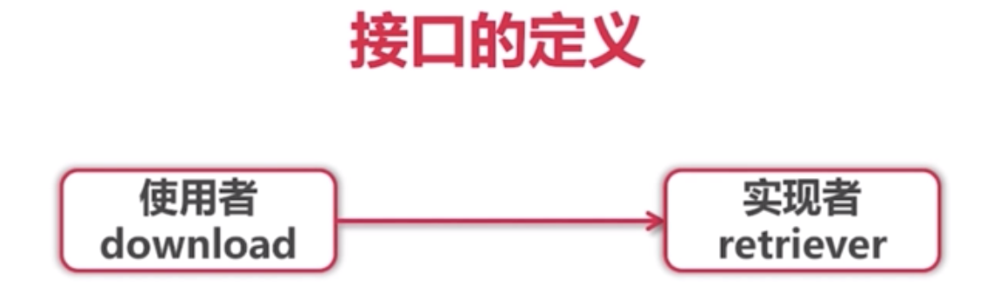

Duck Typing（鸭子类型）
在维基百科中是这样定义的：
鸭子类型（英语：duck typing）是动态类型的一种风格。在这种风格中，一个对象有效的语义，不是由继承自特定的类或实现特定的接口，而是由”当前方法和属性的集合”决定。
而鸭子类型这一名字出自James Whitcomb Riley在鸭子测试中提出的如下的表述：
当看到一只鸟走起来像鸭子、游泳起来像鸭子、叫起来也像鸭子，那么这只鸟就可以被称为鸭子
Duck Typing 的原话是，走起来像鸭子、游泳起来像鸭子、叫起来也像鸭子，那么它就是一只鸭子。
所谓duck typing，可以联想到它的推导，并不在乎类型的真正实体，只关心它的行为有duck的特性（描述事物的外部行为而非内部结构），那么就可以把它当做一只duck来看到
一般来讲，使用 duck typing 的编程语言往往被归类到“动态类型语言”或者“解释型语言”里，比如 Python, Javascript, Ruby 等；而其它的类型系统往往被归到“静态类型语言“中，比如 C/C++/Java。在不同的编程语言中，Duck Typing 实现方式：
- Python 中的 Duck Typing
def download(retriever):
return retriever.get("www.baidu.com");有一个 download 函数，传过来一个 retriever 参数，retriever 是可以获取一个 url 链接的资源的。 这个 retriever 就是一个 Duck Typing 的对象，使用者约定好这个 retriever 会有一个 get 函数就可以了。 显然这个 download 函数会有以下问题：
运行时才知道传入的 retriever 有没有 get 函数。那么站在 download 函数的使用者的角度上看，怎么知道需要给 retriever 实现 get 方法呢？不可能去阅读 download 函数的代码，实际情况中，可能 download 函数的代码很长，可能 retriever 不只要实现 get 方法，还有其它方法需要实现。通常这种情况需要通过加注释来说明。
- C++ 中的 Duck Typing
C++ 不是动态语言，但是它也能支持 Duck Typing，它是通过模板来支持的。
template <class F>
string download(const F& retriever){
return retriever.get("www.baidu.com")
}
这段代码与 Python 的实现方法类似，这个 retriever 随便什么类型都可以，只要实现一个 get 方法，就能通过编译。 那么这种实现方法有什么缺点呢，就是，编译时才知道传入的 retriever 有没有 get 方法。 但它比 python 好一点了，python 是运行时才知道，C++ 是编译时就知道。 同样，这种情况，还是需要注释来说明接口。
- Java 中的类似代码
Java 没有 Duck Typing，它只有类似的代码。Java 的 duck typing :
<R extends Retriever>
String download(R r){
return r.get("www.baidu.com")
}它同样也用了模板类型。模板 R 必须 extends Retriever ，有了这个限定，就能逼着 download 函数的使用者对 Retriever 实现 get 方法，它解决了需要注释来说明的缺点。 传入的参数必须实现 Retriever 接口，就没有运行时发现错误，编译时发现错误的问题。 但是，它严格上来说不是 Duck Typing 。
如果 download 函数只依赖 Retriever 的 get 方法，而 Retriever 接口必须要实现除 get 方法以外，还有其它方法，那么也要一一实现，非常不灵活。
- Go 中的 Duck Typing
在 Java 的 Duck Typing 类似代码中，如果 fetcher 参数需要同时实现两个或以上的接口方法时，Java 是没有办法做到的。但 Go 语言可以做到。
type Retriever struct {
UserAgent string
TimeOut time.Duration
}
func (r *Retriever) Get(url string) string {
resp, err := http.Get(url)
if err != nil {
panic(err)
}
result, err := httputil.DumpResponse(resp, true)
resp.Body.Close()
if err != nil {
panic(err)
}
return string(result)
}
type Retriever interface {
Get(url string) string
}
func download(r Retriever) string {
return r.Get("http://www.baidu.com")
}
func main() {
var r Retriever
r = mock.Retriever{"this is a fake mock"}
inspect(r)
r = &real.Retriever{
UserAgent:"Mozilla/5.0",
TimeOut:time.Minute,
}
inspect(r)
// Type assertion
realRetriever := r.(*real.Retriever)
fmt.Println(realRetriever.TimeOut)
}
// Type switch
func inspect(r Retriever) {
fmt.Printf("%T, %v\n", r, r)
fmt.Println("Type switch: ")
switch v := r.(type) {
case mock.Retriever:
fmt.Println("Contents: ", v.Contents)
case *real.Retriever:
fmt.Println("UserAgent: ", v.UserAgent)
}有一个注意的点
r = mock.Retriever{"this is a fake mock"}
写成
r = &mock.Retriever{"this is a fake mock"}
也就是说,传一个值过去也行,传一个指针过去也行,因为Get 接收的是一个值,如果接收的是指针,就只能传指针
- 接口变量自带指针
- 接口变量同样采用值传递,几乎不需要使用接口的指针
- 指针接收者只能接收指针,值接收者两者都可以
严格说Go属于结构化类型系统，类似Duck Typing。Go 的实现方法相对比较灵活，又不失类型检查。特点有：
- 即能同时实现多个接口（Readable, Appendable）
- 又具有 python , C++ 的 Duck Typing 灵活性
- 又具有 java 的类型检查
定义与实现
接口由使用者定义
type Retriever interface {
Get(url string) string
}
func download(r Retriever) string {
return r.Get("http://www.baidu.com")
}
func main() {
var r Retriever
fmt.Println(download(r))
}接口的实现是隐式的
只需实现接口里面的方法
值类型
接口变量的类型
- 表示任何类型:
interface{} - Type Assertion
- Type Switch
// A FIFO queue.
type Queue []interface{}
// Type assertion
realRetriever := r.(*real.Retriever)
fmt.Println(realRetriever.TimeOut)
// Type switch
func inspect(r Retriever) {
fmt.Printf("%T, %v\n", r, r)
fmt.Println("Type switch: ")
switch v := r.(type) {
case mock.Retriever:
fmt.Println("Contents: ", v.Contents)
case *real.Retriever:
fmt.Println("UserAgent: ", v.UserAgent)
}组合
type Retriever interface {
Get(url string) string
}
type Poster interface {
Post(url string,
form map[string]string) string
}
type RetrieverPoster interface {
Retriever
Poster
}具体可以参考标准IO库
常用系统接口
- Stringer
type Retriever struct {
Contents string
}
// 重写toString方法
func (r *Retriever) String() string {
return fmt.Sprintf(
"Retriever: {Contents=%s}", r.Contents)
}- Reader/Writer